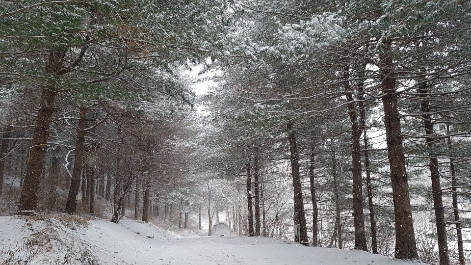
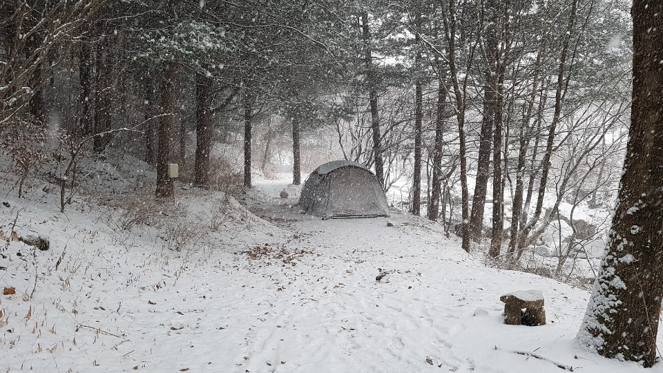

I started winter camping last week. My family prepared winter camping during this COVID-19 pandemics.
We could not go anywhere. The corona blue came closer and closer to us from summer season. My 12 years old boy and 10 years old girl wanted to go outside. Yes we decided to go winter camping.
It takes a lots of time to put up a tent in winter season. So, we tried to find camping site which allow us to keep tent even after we come back home. We can just go camping site and come back without take down a tent.
Can you find us?

Here am I!

Yes We found perfect social distancing place in such COVID19 pandemic. There are no one except us!.
Now I ordered snow sledding toys. I am looking forword next weekend!